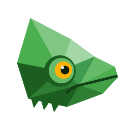
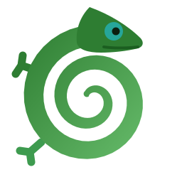
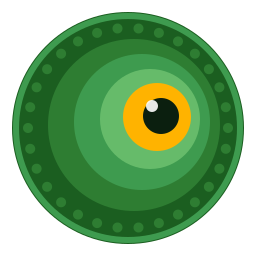
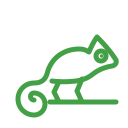

Mimic — logo explorations
Each variant: mark on white, mark on #0f1117, wordmark on white, dark wordmark on #0f1117.
01-chameleon-hexchameleon in a hexagon
01-chameleon-hex.svg
01-chameleon-hex.svg
01-chameleon-hex-wordmark.svg
01-chameleon-hex-wordmark-dark.svg
02-geometric-chameleonlow-poly chameleon head

02-geometric-chameleon.svg
02-geometric-chameleon.svg
02-geometric-chameleon-wordmark.svg
02-geometric-chameleon-wordmark-dark.svg
03-chameleon-curlcoiled chameleon

03-chameleon-curl.svg
03-chameleon-curl.svg
03-chameleon-curl-wordmark.svg
03-chameleon-curl-wordmark-dark.svg
04-eye-markchameleon turret eye

04-eye-mark.svg
04-eye-mark.svg
04-eye-mark-wordmark.svg
04-eye-mark-wordmark-dark.svg
05-terminal-chameleonchameleon terminal prompt
05-terminal-chameleon.svg
05-terminal-chameleon.svg
05-terminal-chameleon-wordmark.svg
05-terminal-chameleon-wordmark-dark.svg
06-minimal-linesingle-line chameleon

06-minimal-line.svg
06-minimal-line.svg
06-minimal-line-wordmark.svg
06-minimal-line-wordmark-dark.svg
06-minimal-line-monocurrentColor version for inline SVG (renders black as an <img>)